1. Installation
If you don't have a Wordpress installed, please check the url http://codex.wordpress.org/Installing_WordPress to learn how to install it.
Installing the Theme
- Place the Invictus folder from the main download to the themes folder, which is in the wp-content folder in your wordpress installation (eg. /wordpress/themes). Upload the theme to your webserver.
- Login to your WordPress Admin-Panel.
- Go to the appearance tab on the main menu to the left. Click on Themes and activate the Invictus-Theme.
- When the theme has been activated come back to this documentation and read the following instructions.
- Alle Theme specific Changes will be made in our own Invictus Settings Panel.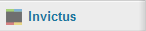
2. Troubleshooting
My navigation menu is not displaying and only "pages" is visible
Unfortunately, you have installed your theme incorrectly, this is why your navigation menu does not work as expected.
- Do not use WordPress Zip-Uploader.
- Do not upload all folders from your downloaded Zip-Package. Only the /invictus folder inside your downloaded zip Package is needed
- Onyl upload the /invictus folder from your downloaded zip direct to your /themes folder of your WordPress Installation
- Please take a closer look to this video how to install your WordPress Theme in a correct way: http://wiki.envato.com/buying/support-buying/solving-broken-theme-issues/
2. Galleries
- Photography/Portfolio Page
- Create the Galleries
- Adding Photos to your Gallery
-
Adding Videos to your Gallery
- 4.1. Adding a lightbox video
- 4.2. Adding video to the project page
- Creating the Gallery Page
- Homepage Fullsize Gallery
- Adding additional Photo Information
- Show additional Photo Information for a gallery
- Linking images to an external link
As you can imaginge, this is the important part of your Theme. This is, why you bought it. So now lets go and add some Photos and Galleries with your greatest Images. We will create those Galleries with our custom post panel Photos on the left site. 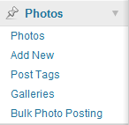
I. Photography/Portfolio Page
First we need to create the Parent Page for our Galleries. We will need this page for our Navigation Menu later on. If you are using a clean WP Installation there is a auto generated page called "Sample Page" or "About" -> delete this page.
- Search for "Add New" under the Pages tab.
- Add a new page with the title "Photography" or "Portfolio" or whatever you want to call this page. At the beginning you can leave the content blank.
- Click on the Update/Publish button on the right top to save your page and make it visible on the front.
II. Create the Galleries
- Search for the Photos Tab in your Wordpress Admin Navigation and choose "Galleries".
- Add a Gallery called Portfolio or Photography or whatever you like to name your parent Gallery.
- Add more Galleries like Shootings, People, Cities or Traveling with the Gallery created before as Parent Gallery. Dont forget to add a description for your Galleries. It will be shown on the page as well.
After you are done, you should have a Gallery tree like below (you can see this at "Galleries" in the Wordpress Admin"):
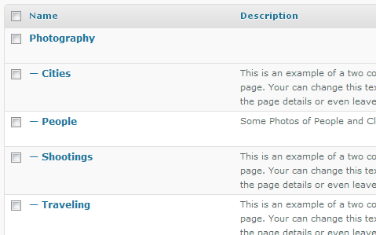
III. Adding Photos to your Gallery
Now we are ready to add some Photos to your created Galleries.
- Go to Photos Tab in the Wordpress Admin Navigation
- Click on Add new
- Enter your title, description and a small excerpt for your Photo. The excerpt will be displayed as image caption in your slider or gallery. If you do not set a excerpt, the caption will automatically be hidden.
-
Choose your Gallery on the right side. Allways remeber to choose the "Photography" or other parent Galleries as parent Gallery to ensure a clean sorting of your Photos.
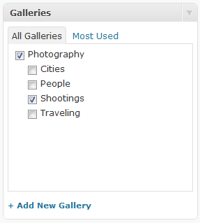
-
Now click on the link Set featured image on the right menu "Featured Image" and the Wordpress Media Gallery will open in a popup.
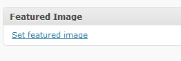
- Upload your images or choose an image, that you have uploaded before.
-
Open the images details with a Click on the "Show" Link if the details are not visible and search for the link "Use as featured image" like shown below.
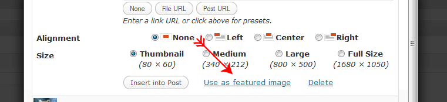
Close the Media Gallery. Now the choosen image appeares on the right menu "Featured Image".
-
Add some tags on the right side at Post Tags to your Photo post, which describes the Photo best.
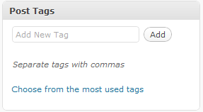
-
Now choose your Image Detail Settings for this Photo. Perhabs you want to open the Photo only in a Lightbox, or you want a detailed Page for this Photo, where your Description is visible and Visitors can leave some Comments? You can adjust this setting for each photo post individually.
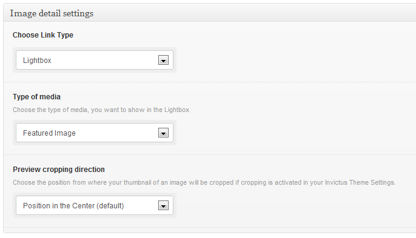
Link types:
- Lightbox The image of this photo post will handle the click to show the featured media in a lightbox. This can be an image or a YouTube or Vimeo video. There will be no link to the detailed photo page.
- Project Page Click will handle the link to got to the detailed photo page.
- External Link Click will redirect to an external link with a selected target (_blank etc).
- Self hosted video Click will handle the link, to go to the project detail page with the attached self hosted video.
- YouTube embedded video Click will handle the link, to go to the project detail page with the attached YouTube video.
- Vimeo embedded video Click will handle the link, to go to the project detail page with the attached Vimeo video.
-
Background
Maybe you want to add a background image to your new created photo post. You can setup your background image easily with the "Background Settings" optionset.
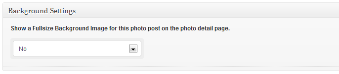
Choose "Yes", if you want to show a background image and setup the new options.
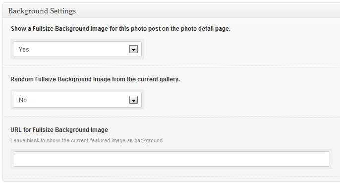
- After you've made your settings save/publish your new photo post.
Your Image should now be shown on your homepage in the Image Scroller.
But remember: The Homepage Fullsize Gallery will only work with full features if the minimum number of images are added for the Slider. So check your settings for the Fullsize Gallery in the Invictus Settings Menu and add a minimum of images.
Goon and post some of your images like above. We will need them later for our Fullsize Gallery.
IV. Adding Videos to your Gallery
You can also add videos to your photo post. Choose between showing the videos in a lightbox from YouTube or Vimeo or show them on the detail page (Self hosted, YouTube or Vimeo). Your videos will also be shown in your fullsize galleries as fullsize background video.
4.1. Adding a lightbox video
Those videos open in a lightbox, when you click on the featured image of this photo post in a gallery view. There will be no link to the photo detail page!
- Redo steps 1-8 from III. Adding Photos to your Gallery
- Choose Lightbox from Link type
- Choose YouTube-Video or Vimeo-Video from Type of media options.
- Enter the URL you want to show in your Lightbox. To change the width or height simple add those parameters to the URL like this: &width=800&height=600
-
Your options for showing a video in a lightbox should now look like this:
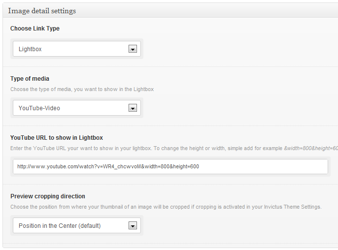
- After you've made your settings save/publish your new photo post.
4.2. Adding video to the project page
If you want to add a video to your project page and show it on your detail page or even in the fullsize gallery, you have to change the Link type of your photo post to Self hosted video, YouTube embedded video or Vimeo embedded video.
- Redo steps 1-8 from III. Adding Photos to your Gallery
-
Choose Self hosted video from Link type
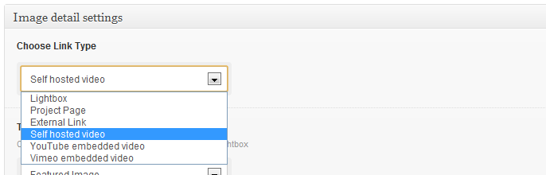
- Enter the H.264 File URL of your self hosted video
- Enter the OGV File URL of your self hosted video
-
Choose your Video preview image
- Post featured image The currently attached featured image will be shown as your video poster image.
- Image URL A custom image will be shown as your video poster image. You have to enter the URL in the field below.
- Set the Video Height. The width is default 660px content width.
- Set the other options like Stretching and Autoplay.
- After you've made your settings save/publish your new post.
You can get more info about html5 video embedding and formats here: Dive Into HTML5 - Video on the web
- Redo steps 1-8 from III. Adding Photos to your Gallery
-
Choose YouTube embedded video from Link type
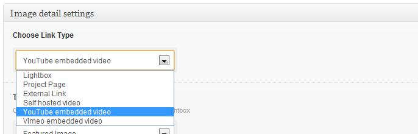
- Enter the YouTube Embed-Code into the field Embed-Code and adjust the width and height to fit the content. (Content width ist 660px)
-
Enter the YouTube video ID in the field Video ID for Fullsize. This is important to show your video in a fullsize gallery. The YouTube video ID looks like this http://www.youtube.de/watch?v=123456 or http://www.youtube.com/e/123456.
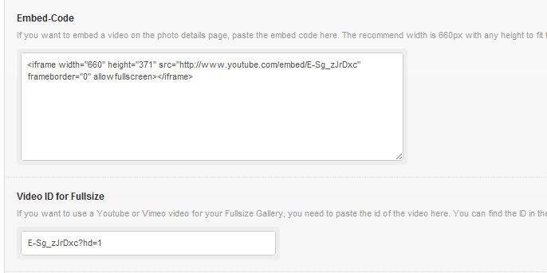
- After you've made your settings save/publish your new post.
- Redo steps 1-8 from III. Adding Photos to your Gallery
-
Choose Vimeo embedded video from Link type
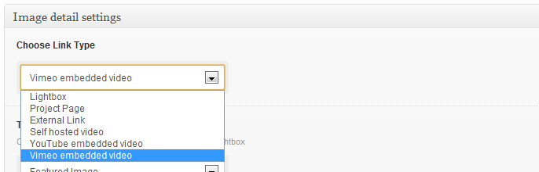
- Enter the Vimeo Embed-Code into the field Embed-Code and adjust the width and height to fit the content. (Content width ist 660px)
-
Enter the Vimeo video ID in the field Video ID for Fullsize. This is important to show your video in a fullsize gallery. The Vimeo video ID looks like this vimeo.com/13412780 or http://player.vimeo.com/video/13412780.
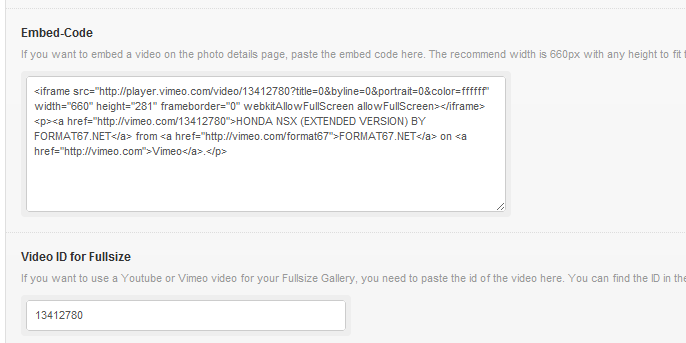
- After you've made your settings save/publish your new post.
V. Creating the Gallery Page
Now that we have created several galleries and photos, we now create the pages to display them.
- Search for "Add New" under the Pages tab.
- Create a Page for a Gallery you want to add to your Theme. For the proper, it is advantageous to name the page same as the galleries created before. So you can keep an overview. But you can also call the pages as you want. That's up to you.
- Add a description and a excerpt for this page, which describes the Gallery best.
-
Go to the right panel and choose one of the Portfolio Templates as page template under the tab "Page Attributes".
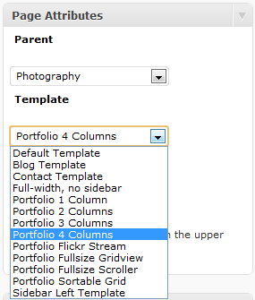
-
Perhabs you have noticed the "Gallery Options" settings below the "Description" Textarea on the left side. This will now be our friend to add a Gallery to this page. As you can see, there is acutally no Gallery available.
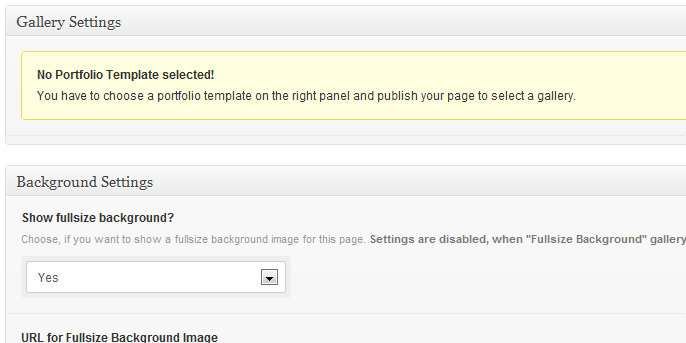
- You have to save your Page with a Portfolio Template before you can choose a Gallery. Save your Page now!
-
Now if you take a look at our "Gallery Options" again, there is a Select-Field with our previously created Galleries. Choose the Gallery you want to Display on this Page. You can also adjust the sorting options or set a background.
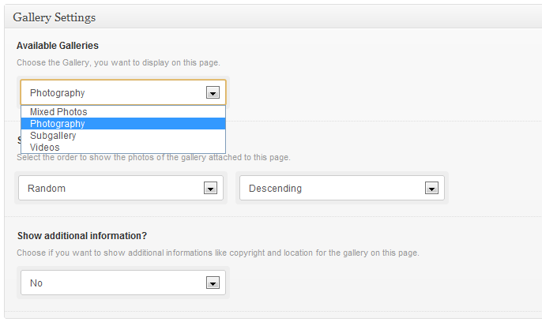
- Save your work!
Your Gallery is now bind to the created Page and available for the Theme.
VI. Homepage Fullsize Gallery Settings
Have you created a few image posts? If so, then we can configure the Homepage Fullsize Gallery.
- Go to Invictus Settings Menu
- Choose the Fullsize Gallery tab.
-
Choose your categories to be displayed
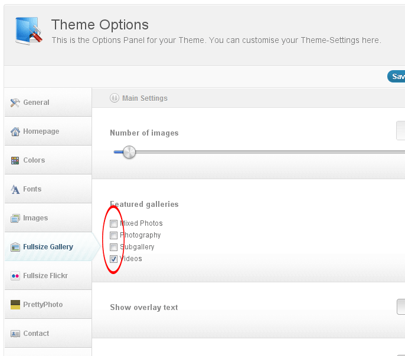
- Setup your image dimensions and other settings.
- Save your changes
Your fullsize gallery on your homepage is now ready. Play around with some options and setup the fullsize gallery as you like.
VII. Adding additional Photo Information
You can enable an add additional information to your photos like copyright, location and date.
These settings are made on the photo post option page under the description box. But remember, you have to activate the additional informations for a specific gallery on the page template itself.
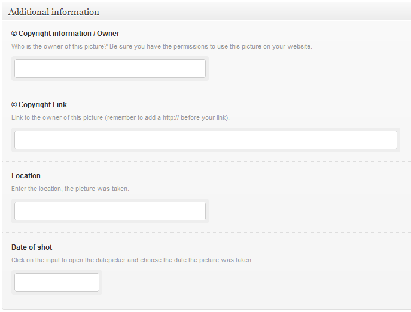
VIII. Show additional Photo Information for a gallery
Invictus brings you additional Information fields for your photos as mentioned above. Now to display this informations on a gallery page you have to activate them in the page template options.
- Go to Pages and choose the gallery page you want to edit.
-
Choose Yes or No from the select-box Show additional information? to show additional informations like copyright and location for this gallery
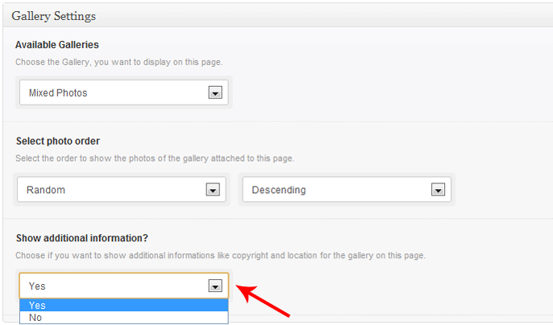
- Save your changes
Now your additional informations are shown on the choosen gallery portfolio page.
IX. Linking images to an external link
To link an image to an external page instead of linking to a lightbox or a project page your only have to choose "External Link" from your photo option page at "Image Detail Settings" and enter the URL of the external link.
A Click on the image now referes to the entered URL in a new Window.
4. Templates
- General information
- Column templates
- Portfolio Flickr Fullsize Gallery
- Portfolio Flickr Stream
- Portfolio Fullsize Background Gallery
- Portfolio Fullsize Background Video
I. General information
This theme comes with several custom made templates to present your work in a stylish and unique look. You can simple choose those templates when you create a gallery page. Please read the documentation 4.2. Creating the gallery page first.
II. Column templates
The column templates are designed to show your photos in a column grid view. Those templates do not have any additional settings expect the standard sorting and copyright settings.
You can choose between four different column templates:
- Portfolio 1 Column
- Portfolio 2 Column
- Portfolio 3 Column
- Portfolio 4 Column
III. Portfolio Flickr Fullsize Gallery
The Flickr Fullsize Template is designed to show your Flickr photos in a fullsize background stream. To make this template work, you need to get an API Key from Flickr and enter this key in your Invictus theme settings at the tab "Fullsize Flickr".Get your Flickr API code here.
- Search for "Add New" under the Pages tab.
- Add a new page with a the title of your gallery.
- Go to the right panel and choose the "Portfolio Flickr Fullsize Gallery" as page template under the tab "Page Attributes".
- Save/Publish your page
- The Flickr Fullsize Settings box should now appear in the middle.
- Choose the Flickr image source you want to show and enter the needed ID
-
You can also change the Sorting, Total slides and Image size for this gallery.
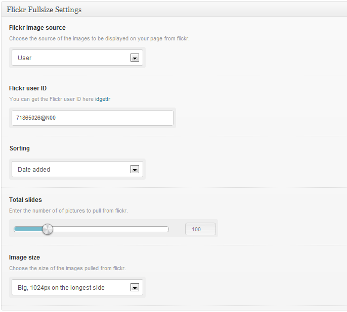
-
If you want to change other settings for the navigation elemenst, the slideshow or some other things you need to change these settings in your Invictus theme settings at the tab "Fullsize Flickr".
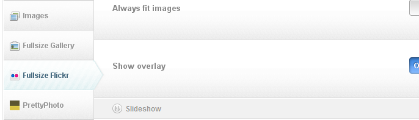
The settings apply globally to all fullsize Flickr templates.
- Save/Publish your new gallery page.
IV. Portfolio Flickr Stream
This template is quite the same as the Portfolio Flickr Fullsize Gallery template with one difference, images are not shown in fullsize background mode but in a column layout.
- Search for "Add New" under the Pages tab.
- Add a new page with a the title of your gallery.
- Go to the right panel and choose the "Portfolio Flickr Stream" as page template under the tab "Page Attributes".
- Save/Publish your page
- The Flickr Settings box should now appear in the middle.
- All settings are the same as the settings for Portfolio Flickr Fullsize Gallery.
-
There is only one additional setting. You can change the way images should handle the click, open your images in a Lightbox or link to the respective Flickr photo page.
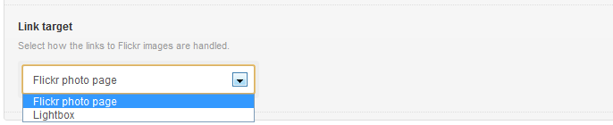
- Save/Publish your new gallery page.
V. Portfolio Fullsize Background Gallery
This template shows your previous created photo posts in a fullsize background gallery.
- Search for "Add New" under the Pages tab.
- Add a new page with a the title of your gallery.
- Go to the right panel and choose the "Portfolio Fullsize Background Gallery" as page template under the tab "Page Attributes".
- Save/Publish your page
- The Gallery Settings box should now appear in the middle.
-
Choose your Available Galleries to show in this template.
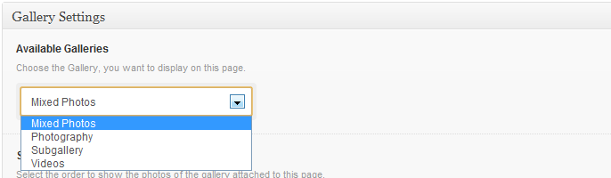
-
Setup all other settings as you like.
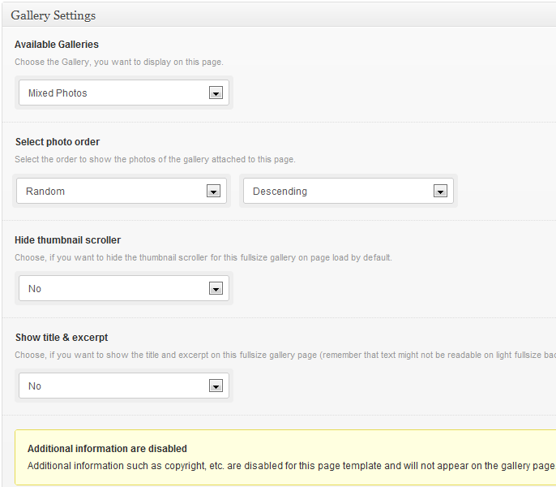
- Save/Publish your new gallery page.
-
If you want to change global settings for this gallery type, you need to change these settings in your Invictus theme settings at the tab "Fullsize Gallery".
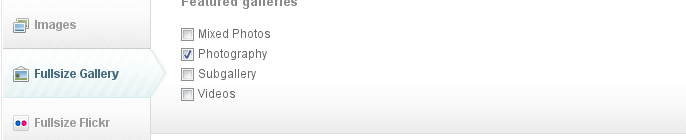
VI. Portfolio Fullsize Background Video
You can create a single fullsize background video with this template.
- Search for "Add New" under the Pages tab.
- Add a new page with a the title of your gallery.
- Go to the right panel and choose the "Portfolio Fullsize Background Video" as page template under the tab "Page Attributes".
- Save/Publish your page
- The Fullsize Video Settings box should now appear in the middle.
- Enter the M4V File URL and the OGV File URL of your video.
5. Blog
- Creating the Blog Category
- Blog Page
- Adding a Blog Post
You need to create a category and a Blog page to make the Blog on your Theme working.
If you do not want to create a Blog for Website, skip this point and continue to the next one.
I. Creating the Blog Category
We need a Blog Category for Wordpress to know, where your Posts are related to.
- Go to the Categories page under the Posts tab
- Add a category called "Blog" as a main category without a parent category.
II. Blog Page
- Search for "Add New" under the Pages tab.
- Add a new page with the title "Blog" or whatever you want to call your blog. Its your choice. But "Blog" as title for now should meet the claims.
-
Go to the right panel and choose the "Blog Overview Template" as page template under the tab "Page Attributes". Without this setting, your blog page will not work correctly!
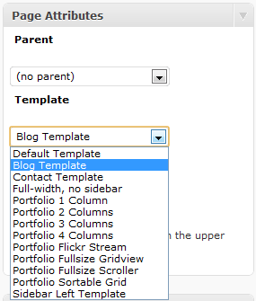
-
Choose the previous created blog categories to show on this blog page at the "Blog Options" meta box. All posts from this choosen categories will be shown on this page.
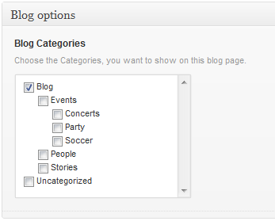
- Click on the Update/Publish button on the right top to save your page and make it visible on the front.
Allways have in mind that while you are publishing your Blog-Posts, you should select category for the Blog. Otherwise your Blog-Post is not shown in your Blog.
III. Adding a Blog Post
Adding a Blog post is nearly the same, as posting an image. The only thing is, that we do this at another place.
- Go to Posts Tab in the Wordpress Admin Navigation
- If you have a clean installations of wordpress, there is a autogenerated post called "Hello World". Delete this one.
- Click on Add new
- Enter your title, description and a small excerpt for your Blog post.
- Choose the Blog Category and add a Featured Image like we did before at "Adding Photos to your Gallery".
- Save your Blog Post.
Your blog post will be displayed in the blog category on your page.
5. Theme Features
- Contact Us Page
- Change Color Scheme
-
Logo options
- 3.1. Custom logo
- 3.2. Custom login logo
- Change the Colors of your Theme
- Social Icons Management
- Font Settings
- Custom Login Logo
Invictus brings you a "Ready to use" contact page Template. You only have to create the Page with the Contact Template and setup some Options.
- Search for "Add New" under the Pages tab.
- Add a new page with the title "Contact us".
-
Go to the right panel and choose the "Contact Template" as page template under the tab "Page Attributes". Without this setting, your Contact page will not work correctly!
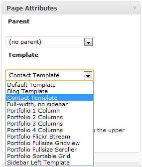
- Add some text to your page, if you want. It will be displayed over the contact form and will have no influence to the form.
- Click on the Update/Publish button on the right top to save your page and make it visible on the front.
- Go to the Options Panel of your Invictus Settings Menu in the left Wordpress navigation. Look for the Contact Us tab and enter your email-adress in the "Contact form email" field. This is the email adress, where contact request will be send to. Fill out all other Information you need. If you leave one Information blank, it will not be displayed on your Contact Page.
After that, your Contact Form is ready to use.
II. Change Color Scheme
You can choose between two different Color Schemes, Black and White.
- Go to Invictus Settings Menu, click on the Colors tab.
- Choose the "White Theme" or "Black Theme".
- Save your work
Thats it, your Theme is now available in the choosen color.
III. Logo
If you want to show your own logo on your Website and your WordPress admin login follow the steps below:
3.1. Custom logo
- Go to your Invictus Settings Menu and select the General Tab
- Search for the option Custom Logo.
- Upload your own Logo with a maximum width of 235px
3.2. Custom login logo
- Go to your Invictus Settings Menu and select the General Tab
- Search for the option Use custom login logo.
- Switch the option to "On"
- Create your own logo with the dimensions 326x67px, name it wp-login-logo.png and upload the new logo to the folder "/invictus/images/". Overwrite the existing file.
Thats it, your done. Your Invictus Theme has now your brand.
IV. Change the Colors of your Theme
You can control nearly every color of your Invictus Theme. Everything is changed on your Invictus Theme Options Panel.
- Go to your Invictus Settings Menu and select the Colors Tab
- Add the colors of your choice to the Main Elements like Pulldowns, Borders etc.
- Choose a link color
- Setup the colors of your Headlines
- Save your Work.
Now your theme is in the colors you choose.
V. Social Icons Management
You can set up your social icons on the footer easily.
- Go to Invictus Settings Menu, click on the "Social Management" tab.
- Choose the social networks you want to display.
- Enter the URL of the choosen networks and save your work.
- Your social icons will be displayed in the footer section.
Please note: Only icons with a link will be displayed! If the link is not set, the icon is invisible!
If you want to add your own custom social icons, you can use the Plugin "Social Bartender". This Plugin allows you to add new Social Icons to your theme. This Plugin will disable the display of the themes social icons.
VI. Font Settings
Invictus brings you a wide range of fonts to use in your Theme. All Google Font API Fonts are ready to choose. You can setup a main font style and a font style for your headlines.
- Go to Invictus Settings Menu, click on the "Fonts" tab.
- Choose the font for your main Body Font Style
- Choose the font for your Headlines
- Set the font sizes of your headlines or the main body or leave them as they are (recommend)
- Save your work!
The Theme shows now your selected font on your page.
VII. Custom Login Logo
You can add your own custom login logo for your WordPress admin section. This logo will be shown when you login to your WordPress admin above your login form.
- Create your own admin logo in PNG format with the dimensions 326x67px and save it as "wp-login-logo.png".
- Upload this image to the folder /themes/invictus/images/
You image will be shown as your custom login logo after reload. If the standard WP-Login logo is shown, please clear your cache.
7. Theme Files
- JavaScript
- PSD-Files
- CSS Files and Structure
I. JavaScript
This theme imports few Javascript files.
- jQuery library and jQuery UI - jQuery is a Javascript library that greatly reduces the amount of code that you must write.
- SuperFish for creating the Drop-Down Menu
- My custom scripts (js/custom.js, js/custom-quicksand.js, custom-scroller.js and custom-superbgimage.js )
- Few JS-plugins for smooth animations and functionality
- Most of the animation in this site is carried out from the customs scripts.
In addition to the custom scripts, I implement a few "tried and true" plugins to create the effects. Most plugins are packed, so you won't need to manually edit anything in the files.
You do not need to change any of this files or call them directly. Needed changes can be made in the integrated Wordpress Invictus Settings Menu. Changing these files on your own risk.
For detailed information to some of the scripts feel free to ask me via my user page contact form here.
II. PSD Files
There are two full layered PSD Files in your downloaded zip archive. One PSD is for your Black Theme and one for your White Theme. No Images from the Preview are included in this PSD Files!
III. CSS Files and Structure
I'm using different CSS files in this theme. Few of them are needed for some JS-Styles. So do not change them whitout knowing what to do. There are also some CSS files to fix IE bugs.
The most important one is main layout CSS file with all major styles, like positioning, width and alignments. It is called style.css and is located in the main theme folder. Any major changes of layout should be done here.
Color changes for your Black or White Theme can be made in your-theme-directory/css/black.css and your-theme-directory/css/white.css.
Here is a short overview for the main style.css file:
If you would like to edit a specific section of the site, simply find the appropriate label in the CSS file, and then scroll down until you find the appropriate style that needs to be edited.
9. Sources and Credits
I've used the following images, icons, javascript plugins or other files as listed.
10. Conclusion
Once again, thank you so much for purchasing this theme. As I said at the beginning, I'd be glad to help you if you have any questions relating to this theme. No guarantees, but I'll do my best to assist. If you have a more general question relating to the themes on ThemeForest, you might consider visiting the forums and asking your question in the "Item Discussion" section.
Alle Images used in the Online-Preview are not included in this Theme or the PSD Files!
Follow me on Themeforest!
Cheers, Dennis Osterkamp aka "doitmax"
12. Change log - Last update: 3.0.21 - 06/28/2013
Bugfixes
- – Slider Image Admin
- – Fix for no thumbnails
- – FSG on retina devices
- – Disable Link on photo posts
- – FSG one image thumbnails
- – Sortable Template Squared Images
- – Protected Page error
- – Sidebar Manager Error
- – Fullsize Scroller Images
Patch notes for Update 3.0.2 - 06/25/2013
Update
- – Option to not crop blog images in details
- – Some image loading optimization
- – Admin loading classes
- – Disable lightbox on fullsize scroller
- – Font-Color for Splash Screen
- – Content for fullsize video template
- – Some responsive changes
Bugfixes
Show/hide all bugfixes for 3.0.2
- – Fullsize Grid image width/height
- – Minor fixes
- – Grayscale scroller thumbnails
- – Slider image add
- – Sorting of Sortable Template
- – Fullsize Scroller Mobile
Patch notes for Update 3.0.1 - 06/19/2013
Bugfixes
- – Splashscreen
- – WordPress Menu hover
- – Body font-color
- – Toggle Box Shortcode
- – Sortable & Column Templates
Patch notes for Update 3.0.0 - 06/18/2013
New
- – Option to not crop blog images in details
- – Separated Theme Options file
- – Splashscreen
- – Option for Slideshow timer in FSG template
- – Lightbox Videos in Fullsize Gallery
- – Sidebar Manager for Posts/Pages
- – Full size Scroller 100% height
- – Shortcode Manager
- – Custom Color Scheme
- – Meta desc in Categories/Galleries
- – Retina Ready Portfolio Images
Update
- – Changed GreyScale on thumbnails
- – Text change on Blog post lightbox option description
- – Removed Blog Category from Option Set
- – Remove âAlways fitâ for mobile devices
- – Load Google Font with supported protocol
- – WP gallery images lightbox gallery
- – Removed Timthumb.php script from theme
- – Renamed PrettyPhoto Tab
- – Indentations to the mobile menu subpages
- – Removed âFade In Content after X Secondsâ
- – Load of imagesLoaded()
- – Load of Isotope only when needed
- – New Twitter API Update
- – Renamed Portfolio Fullsize Grid
- – New media uploader
- – New jQuery and jQuery UI compatibility
- – New .mo and .po files
- – Lightbox Template with lightbox videos
Bugfixes
Show/hide all bugfixes for 3.0.0
- – Option to show lightbox and project page link
- – Galleria Template local versions
- – Bold Welcome Teaser font size
- – Hide âMoreâ link on FSG if set in photo post options
- – Double Superbgimage on gallery backgrounds
- – Quotes in FSG excerpt
- – Pagination with InfiniteScroll
- – Suppress errors when no gallery chosen
- – Sortable filter clickable with fixed logo and nav
- – Retina logo
- – Password protected Portfolio Grid
Patch notes for Update 2.6.6 - 03/18/2013
New
- – Retina Logo
- – Mobile Favicons (Retina Ready)
- – Option to disable lightbox completely
- – Option to add og:image
- – Option Gallery Slug rewrite
- – Default Option for Blog Backgrounds
- – Option to disable comments globally
- – Disable Lightbox on a Blog/Photo post
- – Option to use image meta on Blog/Photo image
- – Option to show lightbox and project page link
Update
- – New Social Icon MyWed.ru
- – Show FSG title and excerpt seperately
- – New Welcome Teaser font option
- – Same class for read-more links
- – Galleria Lightbox Full Image
- – Some Translation Strings
- – FSG images depending on the device
Bugfixes
Show/hide all bugfixes for 2.6.6
- – FSG Greyscale Cropped
- – Chrome Swipe Error
- – FSG Image on Blog posts
- – FSG Selfhosted Video Play Button
- – Top position of Content in template fullwidth
- – Slideshow plays after Video complete
Patch notes for Update 2.6.52 - 02/21/2013
Bugfixes
- – FSG Image cut off without Tumbnails
- – FS Background Featured Blog Posts
- – FS Background on Category
- – Featured image lightbox on pages
- – Content not showing mobile devices
- – FSG thumbnails mobile
Patch notes for Update 2.6.51 - 02/15/2013
Bugfixes
- – Fullsize background slideshow on pages
- – Blog Pagination
- – Social URL in Theme Options
- – Theme Options in Firefox
- – Mobile Nav Background
- – FS Background video mobile bug
- – InfiniteScroll problem
- – Related Posts
Patch notes for Update 2.6.5 - 02/12/2013
New
- – Font Option for FSG title and excerpt
Updates
- – Exclude Protected posts from RSS
- – Improved WP Query
- – W3C Validation fix
- – Technical Theme Option Update
- – Tooltip Shortcode target
- – OG: Meta tags
- – Improved Recent Post shortcode
- – Background for Taxonomy and Category
- – New Slides Slider Version
- – New Fullwidth Browser, no Sidebar TPL
- – Option for Attachment Background
Bugfixes
Show/hide all bugfixes for 2.6.5
- – Updated blog image crop height
- – Mouse Movement Scroller
- – Back To Top in white theme
- – Read more link
- – Galleria Template caption
- – Fullsize Background video template
- – Special Chars in FSG title and Excerpt
- – Background of Mobile Nav
Patch notes for Update 2.6.4 - 01/16/2013
New
- – Stacked images on photo details page
- – Option to disable lightbox on detail page
- – Update to show Thumbnails in Fullscreen
- – Option for scroll logo and navigation
Update
- – Option to resize lightbox images
- – Image Float shortcode Lightbox
- – Improved Lightbox on mobile devices
- – Option to show more link on FSG
- – Touch Scrolling for all devices
- – Sidebar for Lightbox Portfolio Template
Bugfixes
Show/hide all bugfixes for 2.6.4
- – Cropping of portfolio images
- – Navigation on Flickr Pages
- – Header warning in Admin
- – Lightbox Gallery without timthumb
- – Pagination on frontpages
- – Sortable Lightbox images on load
- – Password on Sortable Template
- – Sortable filter padding
- – Update Notifier version compare
- – WP Walker Menu
Patch notes for Update 2.6.31 - 12/21/2012
Bugfix
- – Mobile Navigation not showing
Patch notes for Update 2.6.3 - 12/17/2012
New
- – Option to hide overlay on FSG
Update
- – Show fullsize image link on mobile
- – New Blog Option tab
- – WP 3.5 jQuery admin versions
- – Latest jQuery & jQuery-UI
- – Random Post Order Pagination
- – New Responsive Navigation
- – New Social Icon IMDB
Bugfixes
Show/hide all bugfixes for 2.6.3
- – WordPress Gallery Lightbox Gallery
- – Template sortable division through zero
- – Fullsize Scroller Password Protection
- – Strip tags from image alt and title
- – Image caption hover
- – Sortable grid lightbox
- – Blog lightbox featured image
- – Socialvibe Icon
- – Sidebar Height bug
- – InfiniteScroll when no pagination
- – Sortable column bug in FF and Safari
- – InfiniteScroll problem
- – Lightbox image on single blog post
- – BG image covered by footer
- – IE8 Full size BG image
Update
- – Option to show/hide elements on video play
Patch notes for Update 2.6.2 - 11/12/2012
New
- – Option to show/hide elements on video play
- – Added Column for Menu order at photo posts
Updates
- – Validation update
- – JS performance to optimize loading times
- – Responsive updates
Bugfixes
Show/hide all bugfixes for 2.6.2
- – Taxonomy pages no portfolios showing
- – Videos on homepage
- – Key Up/Down full size gallery
- – Fullsize title âDescriptionâ visible
- – Fullsize Controls overlaying video
- – No title on Social Links
- – Cropping on Nivo Slider
- – Sortable template date sorting
- – Video playing after cycling to next image
- – Sortable grid hover title
- – Disable Single Video loop in Fullsize Gallery
- – Fullsize Flickr Always Fit
Patch notes for Update 2.6.1 - 10/30/2012
Bugfixes
- – Missing Background on some page templates
- – Wrong theme version display
- – Message Gallery missing allthough there is content
- – Hide comments count when comments are closed
- – Some bugs on responsive stylesheets
- – Sortable template âAllâ links deactivated
- – Some small bugs on post-video.js
- – Sortable not showing when content fade in
- – Top right toggle arrow not visible on some pages
- – Sortable post order/sorting
- – Slides Slider
- – Nivo Slider height
- – Some problems with thumbnails scroller
Patch notes for Update 2.6 - 10/26/2012
New
- – Lightbox Gallery Template
- – Touch swipe for fullsize gallery
- – Touch swipe for fullsize scroller
- – Custom.css for own styles
- – Pinterest Social Share Button
- – Touch swipe for thumbnail scroller
- – Full size videos on mobile devices
- – Responsive Accordion Slider
- – Responsive Flickr Stream
- – Responsive Galleria Template
- – Changed Sortable image size to aspect ratio
- – Responsive Sortable Template
- – Responsive Fullsize Scroller Template
- – Responsive Contact Pages
- – InfiniteScroll for portfolio templates with columns (not sortable)
- – Compatibility to WordPress SEO by Yoast
Updates
- – JWPlayer update for non viral version
- – Moved template parts to /includes folder
- – Changed get_template_part for new includes
- – Google Meta update for blog posts
- – Enable Lightbox Gallery for shortcodes
- – Flickr Fullsize version update
- – Optimized Loading of full size gridview
- – Posts Per Pages on Blog Pages
- – Some Shortcode changes
- – Optimized custom JS
- – Show background image in WP E-Commerce
- – New Translation Files
Bugfix
Show/hide all bugfixes for 2.6
- – Related Posts
- – Password Protection on Sortable Template
- – Page background on white theme
- – Image Dimensions on Panorama always fit off
- – Tag loop image caption
- – No link on caption on IE
- – Division on zero error in fullsize grid
Patch notes for Update 2.5 - 08/20/2012
New
- – Custom Link for lightbox images
- – Custom Link for fullsize gallery post
- – Option to show videos and sliders on blogroll
- – Search results background
- – Option to hide passsword protected posts in FSG
- – Option to disable fullsize gallery title link
Updates
- – Optimized loading of timthumb images
- – New Timthumb.php version
- – Sorting order of full size gallery image
- – No need to have a blog post featured image
- – Lightbox on Galleria Template
- – Load most JS in footer
Bugfix
Show/hide all bugfixes for 2.5
- – Scanlines not visible when not autoplaying video
- – Show scanlines only if not in fullscreen mode
- – Fade image on Slides Slider
- – Multiple nivo slider on blog roll
- – Lightbox images from current post on blog roll
- – Sorting on fullsize gallery template
- – Z-index of FSG Play button
- – Panorama images on FSG when images shoul fit
- – Blog post categories
- – Fullsize Background videos on IE
- – Image height on masonry grid in IE8
- – Sortable sorting when itemCaption = true
- – Text wrapping on portfolio gridview
Bugfixes
Show/hide all bugfixes for 2.5
- – Latest jQuery Version included
Patch notes for Update 2.4.2 - 08/11/2012
Bugfixes
- – Latest jQuery Version included
Patch notes for Update 2.4.1 - 07/03/2012
Update
- – Contact page information
- – Changed logic to use native comment function
- – Added fonts âLucida Console, Monaco, monospaceâ
Bugfixes
Show/hide all bugfixes for 2.4.1
- – Navigation Hover color not changing
- – Video not showing in detail pages
- – Slide caption/number display error
- – Autoplay Fullsize video template
- – Top right toggle arrow not visible on project pages
- – Problem with Blog/Photo Sliders
- – Flickr full size scanlines
Patch notes for Update 2.4 - 05/18/2012
New
- – Use WP date format for blog and portfolio dates
- – Featured images for normal pages
- – Full width blog details
- – Videos & Sliders in Blogroll overview
- – fb:admins and fb:app_id options
- – Page Background for Tag, 404 and Archive
Updates
- – Optimized Video Playback for fullsize gallery
- – Play Button for FSG videos
- – Option to play fullsize YouTube Videos in HD
- – Show title and excerpt on FSG with only one image
- – Dozen of new Social Icons
Bugfixes
Show/hide all bugfixes for 2.4
- – Vimeo Video height
- – Blog single background image url
- – Superbgimage Background color of white theme
- – Scanlines not visible after video on slideshow
- – Duplicated images in lightbox
- – Password form changes for WP 3.4
- – Show Title & Excerpt on FSG template
- – Flickr Stream content background display
- – Navigation Font changes
- – Single Video in Full Size gallery not playing
Patch notes for Update 2.3.31 - 05/18/2012
Updates
- – Some Option Panel Adjustments
Bugfixes
Show/hide all bugfixes for 2.3.31
- – Top right toggle arrow not visible on homepage
Patch notes for Update 2.3.3 - 05/16/2012
New
- – Dutch language files
- – Sidebar for Galleria Template
- – "Disable" Link type for photo posts
- – Accordion for blog posts
Updates
- – Image source optimization
- – Sortable content above sorting link
Bugfixes
Show/hide all bugfixes for 2.3.31
- – YouTube and Vimeo Shortcode conflict
- – Single Image URL BG on Blog posts
- – Added missing Google Analytics file
- – Vimeo Video height
- – Facebook like on Lightbox
- – IE9 Fullsize Scroller Images
- – Font preview in theme settings
- – Quotes & special chars on fullsize gallery excerpts
- – Default page template password protection
- – PrettyPhoto YouTube lightbox on iPad/phone
Patch notes for Update 2.3.1 - 04/04/2012
Bugfixes
Show/hide all bugfixes for 2.3.1
- Fullsize Scroller on IE not working
- Fullsize Gallery Video
- z-Index of slideshow controls
- Wrong images for overlay on white skins
Patch notes for Update 2.3 - 03/29/2012
New
- – Background Slideshow for post and pages
- – Choose Galler for Fullsize Background on posts/pages
- – Set a background color for each photo in fullsize gallery
- – Control position of thumbnail scroller controls
Updates
- – Pretty_image shortcode linking error
- – Fallback for google fonts
- – Change Style of overlay title in fullsize gallery
- – Removed $ from superbgimage
- – Alt attribute on gallery templates
- – Some adjustments on white theme
- – Some adjustments on black theme
- – Always fix images on fullsize gallery templates
- – Scroller Template update
- – Add your own Google Font API key
- – optimized iPad/iPhone video display
Bugfixes
Show/hide all bugfixes for 2.3
- – Fullsize Scroller Template Bugfix
- – Timthumb multisite bug
- – Comments hidden when âMore from this galleryâ is off
- – Pagination for Blog and Templates on frontpage
- – Password Protection on sortable gallery
- – Empty Tag results for blog pages
Patch notes for Update 2.2.3 - 01/31/2012
New Features
- – Option to hide Scroller Thumbnails on mouseleave
- – Option for always showing title/excerpt
Updates
- – Hover animation for shortcode lightbox images
- – Improvements for Fullsize Scroller on iPad/iPhone
- – Latest Timthumb version
- – New theme screenshot
Bugfixes
Show/hide all bugfixes for 2.2.3
- – Empty Font selection
- – Scroller Thumbnails on multisites
- – Fullsize Scroller Thumbnails not clickable
- – back to top link
- – Bulk photo posting author/tags/alignment
- – Multisite Bugfix for fullsize background
- – Selfhosted Video
- – Lightbox descritpion & title
- – Portfolio fullsize pagination fix
- – Sortable âAllâ sorting on page load
- – Some multisite improvements
- – Sorting on fullsize scroller
- – Position of footer on mobile devices
- – Sidebar on Flickr Stream pages
- – Background transparency in IE8
Patch notes for Update 2.2.2 - 01/16/2012
Updates
- – Lightbox YouTube HD
- – Some admin style changes
Bugfixes
Show/hide all bugfixes for 2.2.2
- – Google font include bugfix
- – Navigation line wrap bugfix
- – Loader overlay on navigation
- – Flickr Fullsize gallery fitting
- – Fullsize grid loading
- – Dashboard Error message
- – Error on blog pages
- – IE8 Transparency
- – External link icon for image hover
- – Comments on default page template
- – Opera Scrolling
- – Option to set Google Font Subsets
Patch notes for Update 2.2.1 - 12/18/2011
New Features
- – Option for blank logo
- – Sort Gallery Filter on Sortable Page Templates
Updates
- – Avoid admin bar overlap
Bugfixes
Show/hide all bugfixes for 2.2.1
- – Error on google.font.inc.php
- – Fullsize Scroller position and arrow
- – Galleria Template fix
- – Logo path
- – Pull alt text from excerpt for fullsize gallery
- – IE8 bugs
- – Main Navigation line break
Patch notes for Update 2.2 - 13/12/2011
New Features
- – Choose blog categories for each blog page
- – Galleria Template
- – Change Navigation font size
- – Slider support for blog posts
- – Video support for blog posts
- – Photo order for Sortable Portfolio
- – Option to use preload for fullsize images
- – Support for Social Bartender Plugin
New Features
- – Option to activate / deactivate custom logo
- – Option to allow comments on sortable templates
- – Google Font API automatic update
- – Increased post per page maximum
- – Gallery selection on bulk photo posting
- – Add alt tags to fullsize gallery images
- – Password protection for all pages/templates
- – New Theme Options Styles
Bugfixes
Show/hide all bugfixes for 2.2
- – Some missing language
- – Updated Code
- – Blog image height
- – More Images Gallery
- – Portfolio hover animation
- – Facebook og tags on homepage
- – Google font replacement errors
- – Social share on shortcode prettyPhoto images
- – Logo height
- – Facebook like shows wrong image
- – Some tags not showing
- – Fullsize Flickr Interval
- – no line break on navigation links when resize
Patch notes for Update 2.1.7 - 11/16/2011
Updates
- – Code optimization on galleries
- – Option to show excerpt in slideshow title
- – Changed slideshow option to not preload images
- – Fullsize grid image height
- – Option for comments on column templates
- – Password protection for sortable template
- – Variable logo height
- – Improvements on bulk photo postings
- – Add custom login logo
- – Fullsize gallery key navigation
Bugfixes
Show/hide all bugfixes for 2.1.7
- – Query galleries for "more from this gallery"
- – Scroller password protection
- – Stretching for self hosted videos
- – OG meta on homepage
- – Navigation & Logo overlay of slideshow loading
- – Fullsize grid additional information
- – Additional Information on detail page
- – Blog featured image cropping
- – Search template
- – Some PrettyPhoto fixes
Patch notes for Update 2.1.6 - 11/03/2011
Updates
- – Use WP_mail for contact page
- – Some code optimizations
- – New option to hide scanlines on entire page
- – Option for autoplay videos on slideshow
- – 500px social icon
Bugfixes
Show/hide all bugfixes for 2.1.6
- – Sortable text content
- – Fullsize scroller galleries
- – Fullsize scroller password
- – Gallery / Blog pagination
- – Loading of videos on slideshows
- – PrettyPhoto resize, Description, Social plugins
- – Cropping directions
- – Removed custom exif saving
- – Bulk photo posting date
- – Thumbnail scroller hidden after video is finished
- – External link targets
Patch notes for Update 2.1.5 - 10/18/2011
Bugfixes
- – PrettyPhoto Bugfix
- – Video Scroller Thumbnails autplay
Patch notes for Update 2.1.4 - 10/17/2011
New features
- – Fullsize Option to show thumbnails squared
Updates
- – Related Posts
- – Widget Font size option
Bugfixes
Show/hide all bugfixes for 2.1.4
- – PrettyPhoto Version Update
- – Fullsize Scroller Post count
- – Blog meta position
- – Sortable meta fullwidth
- – Changed google analytics code
- – Flickr hide thumbnails
Patch notes for Update 2.1.3 - 10/07/2011
Bugfixes
Show/hide all bugfixes for 2.1.3
- – Post prev/next from current gallery
- – Fullsize Loader for single images
- – Gallery Shot-Date
- – WP Query on gallery posts
- – Backward compatibility for Item Link Type
- – Show/Hide arrow on Fullsize Flickr Stream
- – Fullsize Flickr Scanlines
- – Fullsize Gallery Scanlines
- – PrettyPhoto IE error
- – Tags & gallery categories fix
- – Fullsize Flickr Slideshow not shown
- – Show Thumbnails after video complete
- – Line break in thumbnail scroller
- – Image caption option
- – Image hover fade
- – Small Seo Update
- – Updated de_DE.po and de_DE.mo
- – Scroller Gallery JS update
- – Sortable Gallery fix
Patch notes for Update 2.1.2
Bugfixes
Show/hide all bugfixes for 2.1.2
- – Welcome teaser styling
- – Tags & Gallery Categories
- – Admin post saving
- – IE CSS including
- – Scanlines zIndex
Patch notes for Update 2.1.1
Updates
Bugfixes
Show all bugfixes for 2.1.1
- – social tools on lightbox
- – back to top link
- – IE8 fullsize expander
- – IE8 Dropdowns
- – IE Fullsize Video height
- – Some Fullsize Video Bugfix
- – Fullscreen slideshow stops after video complete
- – Google Font include
- – YouTube shortcode
- – Fixed Scanline height
- – Empty Slider Images on save in slider posts
- – Initial Slides Slider height
Patch notes for Update 2.1
New features
- – Fullsize Background Video Template
- – Videos for project pages
- – Display videos in fullsize gallery
- – Slider for photo post images
- – Flickr Fullsize Portfolio Template
- – Google Webfonts Previewer and Updated Fonts
- – Option show/hide background on project pages
- – Social share for blog posts
- – Cropping for blog post images
- – Overlay text for fullsize galleries
- – Next/Prev links in current Category/gallery
- – Improved sortable template (fullwidth, image dimension)
- – Back to top link
- – Improved theme settings
- – Save without reload for Theme settings
- – Greyscaled thumbnails for fullsize slider
Updated features
- – Flickr Stream Gallery with new JS
- – Multisite support
- – Some Admin Core Changes
- – New .po file for english and german
- – PrettyPhoto Social Share (thanks to Aleksey Napolskih)
- – Footer is now hiding if fullscreen mode is activated
- – Optimized Post/Page meta optionsets
- – Streched image width to full content
- – Pagination for sortable grid
- – New improved Documentation
Bugfixes
Some minor bugfixes.
Show all Bugfix for 2.1
- – Fullsize Background crop issue
- – Using Shortcodes in Toggle boxes
- – Style of footer when disable social links
- – Adding space before entry content
- – Fullsize Background for Blog pages and posts
- – Timthumb fix for not displaying in some cases
- – JS error on IE8
- – IE8 Errors on fullsize gallery scroller
- – Float of social icons in footer in IE
- – Recent Posts linking to photo project page
- – Removed linebreak for User name at comments widget
- – Image fade on hover for images in portfolio
- – Social share language for facebook
- – iPad/iPhone Superfish menu fix
- – Bulk photo post
- – Category description
- – ASC / DESC sorting for portfolios
- – Fullsize Grid Template
- – Added strings to translate
- – Sidebar Scrolling Fullsize Gallery
- – wmode transpartent for embeded videos
- – Archive Page Sidebar
- – Opera scrolling bugfix
Update 2.0 - 08/25/2011
- – New: Fullsize Gallery Template Widget Area
- – New: Support for "Read more" tag
- – New: Add Content to portfolio template pages
- – New: Entry meta linking (comments, categories)
- – New: Password Protection on templates
- – New: Bulk Photo Posting - See it in action!
- – New: Hover effect for entry images on photo post page
- – New: Option to remain image proportions on fullsize gallery
- – New: New mouse move scrolling option for fullsize gallery
- – New: Added OpenGraph meta tags
- – New: Social Sharing for Photo Posts
- – New: Autoplay for fullsize background gallery
- – Update: Some new social icons (Google+, Foursquare etc)
- – Update: Latest timthumb version
Show all Bugfix for 2.0
- Bugfixes for Invictus Update 2.0
- – Fullsize Background Bug for Pages/Posts/Blog
- – SEO for widgets
- – Current Page Marker for Portfolio Menu
- – Show Toggle Button on Fullsize Gallery
- – Category & Archives images width/height
- – Related Posts Image link
- – "More Images From this Gallery"
- – Title of Single Pretty Image Shortcode
- – Adjusted Image Quality
- – Remove/added missing files/images
- – Category widget children style
- – Fullsize background for search result page
- – Fullsize Scroller Loading fix
- – Optimized Fullsize Scroller Mousewheel and Scrolling
- – Removed !# URL change from PrettyPhotos
- – adjusted min-height for content
Update 1.92 - 07/05/2011
- – Some important JS for fullsize gallery thumbnails
Update 1.91 - 07/04/2011
- – Small JS bugfix for content fade in
- – Fullwidth template fixes
- – JS Bugfix for thumbnails and fullsize overlay
- – Fixed Contact template
- – Added PrettyPhoto social theme
- – Added Option for text and title on homepage fullsize gallery
Update 1.9 - 06/26/2011
- – Raised number of images for a fullsize gallery
- – Added a fullsize blog template
- – Added option to show/hide thumbnails on a fullsize background gallery page on load
- – Added option to show headline and excerpt on fullsize gallery pages
- – Added option to fade in content on page load
- – Fixed notifier error for some server types
- – Fixed blog fullsize background bug
Version 1.81 - 2011/05/24
- – Portfolio Background Bugfix
- – Theme Updater fix
Version 1.8 - 2011/05/23
- – Adjusted fullsize scroller speed
- – Removed permalink on page template headline
- – Added custom CSS option field
- – Added options for navigation link color
- – Fixed font size of widgets
- – Sortable grid height now changes on sorting
- – Fixed blog comments required star and label
- – Added theme updates notifier on WordPress Dashboard
- – Fullsize scroller arrows are now allways visible on mobile devices
- – New Template Left Sidebar full width
- – Image plus on/off and no-link for images
- – Raised number of images for Fullsize Galleries
- – Changing order for photo posts
- – Fullsize Gallery order for homepage
- – Added ICQ, MSN & Tumblr Social Icons
- – Contact Page Layout Fix